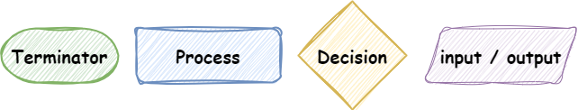
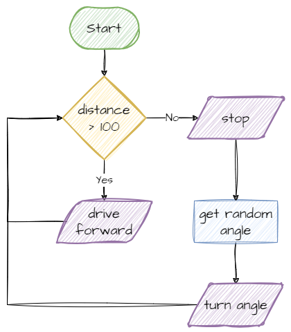

Developing Robot Code#
Scenario
This scenario will be used to explore how to plan a robot project.
Make your robot move randomly around the room whilst avoiding running into anything.
Step 1 - Identify requirements#
Before you can even start planning you code, you first must identify everything your robot needs to do. These are called requirements.
The requirements need to be specific. Rather than saying the robot drives, you need to say for how long, or until an event happens.
List down all the requirements you can identify.
Scenario - Identify Requirements
The robot will need to:
Drive endlessly in a direction
Stop when it detects an object within 10cm
Turn in a random direction
The robot will then return to requirement 1
Step 2 - IPO Table#
All digital systems consist of three basic elements:
Input
Process
Output
Digital systems receive input from the real world. They then process (perform calculations on) the input. The product of processing then get returned as output to the real world.
This flow is mapped out in an IPO (Input, Process, Output) table.
Outputs#
To start, the requirements identified in the previous step form your outputs.
Scenario - IPO table output
Input |
Process |
Output |
|---|---|---|
Drive endlessly in a direction |
||
Stop if object within 10cm |
||
Turn in a random direction |
Input#
Next you need to consider what inputs are available to produce the required outputs.
Scenario - IPO table input
Input |
Process |
Output |
|---|---|---|
no object within 10cm |
Drive endlessly in a direction |
|
object within 10 cm |
Stop if object within 10cm |
|
robot stopped |
Turn in a random direction |
Process#
Finally state how the robot will react to the input to create the output. Make sure that you reference the robot components doing the work.
Scenario - IPO table process
Input |
Process |
Output |
|---|---|---|
no object within 10cm |
if distance sensor > 100, drive base drives straight |
Drive endlessly in a direction |
object within 10 cm |
if distance sensor < 100, drive base stops |
Stop if object within 10cm |
robot stopped |
if robot stopped, drive base turns random degrees |
Turn in a random direction |
Step 3 - Flow Charts#
The next step is to express the process in the form of a flowchart. Using flowcharts helps to map out the different computational steps needs for the robot to complete its task.
Below is a reminder of flowchart symbols:

Below is the flowchart for the process in the IPO table.
Scenario - Flowchart

Step 4 - Pseudocode#
Now we will convert the flowchart to pseudocode. Because pseudocode focuses on algorithm logic, it is used to convert a process into a code-like format without worrying about the syntax of the programming language.
What is Pseudocode
Pseudocode is like giving instructions to a friend in a really simple and clear way before you write an actual computer program. Instead of using fancy computer language, you use simple words and basic ideas to tell the computer what you want it to do.
It’s like making a rough sketch of your plan so that when you start writing real code, you already know what steps to take.
Pseudocode helps you organize your thoughts and ideas before you dive into the technical details of writing a program.
You don’t need to worry about how you describe each step in pseudocode. The only test is that it needs to be obvious what each line means.
Pseudocode
start main loop
distance = read distance sensor
if distance > 100
drive robot straight
else
stop robot
angle = get random number
turn robot to angle
Notice this pseudocode uses some progamming terms and some structure. Again, this is not needed. As long as the pseudocode clearly explains each setp of the algorithm.
Converting to code#
Event-driven Programming#
Before you convert your pseudocode to Python code, you will need to learn about event-driven programming. You have actually been using event-driven programming right through these tutorials, but before you can develop your own, you will need to understand it.
Event-driven programming allows your robot to be responsive to the outside world. It involves two phases: setup and main loop. You would recognise these from all the examples.
Setup#
The setup phase prepares the robot for the main loop. It initialises all the components and creates the variables and functions that will be used by the main loop.
A distinguishing feature of the setup phase is that is only runs once.
Main loop#
The main loop is where the robot waits for things to happen, and then reacts to them. The correct terminology is that the robot listens for events and then handles these events.
Unlike the setup phase, the main loop will continue to be executed as long as the robot is running or until it is explicitly exited.
The party anaolgy#
Think if event driven programming like you holding a birthday party. First you will need to set everything up. Go buy the food and drinks, decorate the party room, make your playlist, and so on. All of these are done once. This is the setup phase.
Once the setup phase is completed, and you are ready to party, you enter the main loop phase. You wait for things to happen (listening for events) and then respond when they do (handling events).
For example:
the first person arrives (event) → you welcome them (handle)
they give you a gift (event) → you open the gift (handle)
you feel thirsty (event) → you pour yourself a drink (handle)
the cake arrives (event) → people sing happy birthday (handle)
happy birthday finishes → you blow out the candles (handle)
Code#
Time to write the Python code.
Create a new file called
move_and_avoid.pyType the code below into the file
Predict what you think will happen.
Run your code:
1# move_and_avoid.py
2
3from pybricks.hubs import PrimeHub
4from pybricks.pupdevices import Motor, ColorSensor, UltrasonicSensor, ForceSensor
5from pybricks.parameters import Button, Color, Direction, Port, Side, Stop
6from pybricks.robotics import DriveBase
7from pybricks.tools import wait, StopWatch
8from urandom import randint
9
10# --- SETUP
11# start components
12hub = PrimeHub()
13
14left_motor = Motor(Port.E, Direction.CLOCKWISE)
15right_motor = Motor(Port.F, Direction.COUNTERCLOCKWISE)
16robot = DriveBase(left_motor, right_motor, wheel_diameter=56, axle_track=80)
17
18distance_sensor = UltrasonicSensor(Port.C)
19
20# store variables
21
22# --- RUNNING
23while True:
24 # read sensor data
25 distance_reading = distance_sensor.distance()
26
27 # process data
28
29 # output data
30 if distance_reading > 100:
31 robot.drive(500, 0)
32 else:
33 robot.stop()
34 angle = randint(-180, 180)
35 robot.turn(angle)
Investigate
Import section
Lines 3 - 8 is the import section which imports all modules necessary for the program.
line 8 is new. It’s importing the the
randintfunction for getting a random angle.
Setup section
Lines 11 - 17 is the setup section which implements the setup phase of your event-driven program. You need to setup three robot components:
line 11 initialises the hub. This allows the code to use the Hub’s ports.
lines 13 - 15 initialises the robot drive base.
line 17 initialises the distance sensor
Main Loop
Lines 20 - 28 are the main loop which contain the event listener adn the event handler.
line 20 is the event listener. It is getting the reading from the distance sensor
lines 23 - 28 are the event handler. It handles two events:
that the distance is more than 100 → drive straight
that the distance is not more than 100 → stop and turn a random number of degrees.